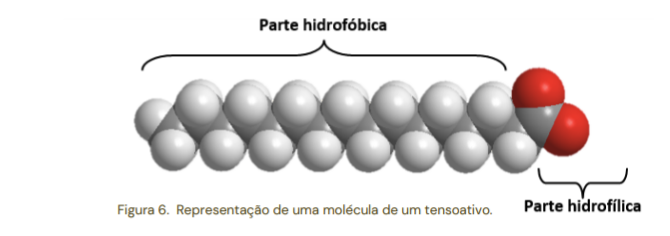
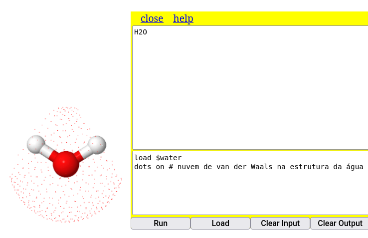

1. Duplo-clique do mouse no 1o. átomo;
2. Arraste do mouse ao 2o. átomo;
3. Clique do mouse no 2o. átomo5 - Oficina de moléculas
1 Medidas
O Jmol permite calcular distâncias e ângulos em um modelo molecular. Para exemplificar isso, talvez seja interessante o carregamento de um modelo de água (
load $water), e cujas distâncias e ângulos estão presentes em alguns livros de Química.1.1 Para distâncias
No exemplo da molécula de água, para se determinar a distância de uma ligação O-H, por exemplo execute:
Experimentando para a distância da ligação O-H, o programa retorna o valor de 0,097 nm, ou 0,97 Angstroms, o valor convencial para esse tipo de ligação covalente.

1.2 Para ângulos
Para a mesma molécula de água, experimente determinar o ângulo de ligação:
1. Duplo clique no 1o. átomo (ex: H);
2. Arrasta ao 2o. átomo (ex: O);
3. Clique no 2o. átomo;
4. Arraste ao 3o. átomo (ex: o outro H);
5. Clique no 3o. átomo Perceba que o sistema retorna o valor de 114\(^{o}\), um valor próximo do previsto para a molécula (109.5\(^{o}\)), ou medido (104.5\(^{o}\)). Essa aproximação é decorrente da construção do modelo de água.
Para limpar as medidas, use o comando:
measure off2 Características moleculares
São diveras as informações tangíveis a um modelo molecular no Jmol. Exemplificando as mais básicas para a molécula de um componente do molho shoyo, o glutamato:
2.1 Cargas
Por vezes pode ser interessante apresentar a polaridade das moléculas em função de sua distribuição de cargas. No Jmol há dois tipos de cargas, carga efetiva (
formaCharge) e carga parcial (partialcharge). Podemos ilustrar a distribuição de cargas em uma molécula de tensoativo, como o hexadecanoato.
Para isso, digite no Console os comandos abaixo:
load $hexadecanoate
calculate partialCharge # cálculo de cargas parciais do modelo
label %P # apresentação das cargas (etiquetagem) Uma característica do Jmol que o torna mais eficiente a execução de suas ações é a disposição sequencial de comandos. Dessa forma, não é necessário clicar em Enter para cada comando, bastando separar os comando por ponto e vírgula (;) como ilustrado abaixo, para o cálculo de cargas parciais da molécula de glutamato:

Da mesma forma pode-se ilutrar a obtenção de cargas formais no modelo. Nessa, adicionou-se a coloração transparente, para melhor visualização da carga unitária negativa do ácido carboxílico:
calculate formalcharges # cálculo de cargas parciais do modelo
label %C # apresentação das cargas (etiquetagem)
Perceba que os comando da figura mistura maiúscula e minúsculas, de modo diferente da linha de comando que a antecede. Essa é uma característica bem legal do Jmol, que não se importa com a capitalização ou não da fonte. Ou seja, tanto faz se minúsculo, maiúsculo ou uma combinação de ambos; o Jmol executa a ação do mesmo modo.
2.1.1 Scripts & Ensino Reprodutível
O exemplo acima apresenta uma maneira simples de concatenar comandos, facilitando a execução automática e sequencial de um conjunto desses. No entanto, a visualização da linha de comando fica um pouco prejudicada com a separação por “;”, o que pode acarretar uma poluição visual quando houver vários comandos.
A situação de contorno envolve a disposição dos comandos no formato de um script. Esse nada mais é do que um trecho de código contendo um comando por linha, o que melhora a visualização do código como um todo. Além disso, o script possui a vantagem adicional de se inserir comentários entre as linhas de comando, permitindo também uma melhor apropriação do código e de seu aprendizado.
Essas características de um comando por linha com comentários explicativos conferem ao Jmol seu aspecto para programação de ações sequenciais, e enraiza por consequência uma das premissas básicas para um Ensino Reprodutível: a redação de trechos de códigos em comandos unitários por linha, escritos como num bloco de notas, e com comentários sobre as ações do programa em cada linha.
Exemplificando para um script envolvendo as ações para o glutamato acima, apenas copie o trecho abaixo e cole-o no Console do JSmol, executando-o.
load $glu # carregamento de micromolécula
wireframe only # renderização exclusiva de varetas
calculate partialCharge # carga parcial
label %P Outro aspecto inerente à iniciativa de Ensino Reprodutível reside na possibilidade de se avaliar o código com alguma alteração, objetivando um produto final ligeiramente modificado. Tente repetir o trecho acima, mas para cargas efetivas, ou seja:
load $glu # carregamento de micromolécula
cpk only # renderização exclusiva por espaço preenchido
calculate formalCharge # carga efetiva
label %C Complementarmente, pode-se atuar alterando mais comandos do código, de modo a criar um resultado completamente diferente do original. Isso define outra característica do Ensino Reprodutível, qual seja, a de criação de trecho de código. Ilustrando, segue um trecho baseado no anterior, mas para minimização de energia e reestruturação dos orbitais da molécula.
load $glu # carregamento de micromolécula
cpk only # renderização exclusiva por espaço preenchido
minimize # comando para minimização de energia da estrutura 3 Características moleculares
Por vezes também é interessante apresentar à turma o conceito de forças fracas que permeia as interações moleculares, tal como ilustrado abaixo.
{kind=link}
Além de previsão estrutural para carga parcial e carga formal, o Jmol também permite evidenciar forças fracas no modelo, tais como nuvem de van der Waals e ligações de hidrogênio, como segue.
3.1 Nuvem de van der Waals
dots on # nuvem de van der Waals nos átomos do modelo (retira-se com "dots off")
calculate hbonds # identifica ligações de hidrogênio no modelo Ilustrando, copie e cole o trecho que segue no Console:
load $water
dots on # nuvem de van der Waals na estrutura da água
dots ionic # nuvem iônica sobre o modelo

3.2 Ligações de hidrogênio
load=1djf # carrega um modelo de peptídio
calculate hbonds # apresenta as ligações de H presentes na estrutura
4 Superfícies
Além da superfície de van der Walls (dots on) vista acima, o Jmol é capaz de representar algumas superfícies para modelos moleculares. Quanto maior a molécula, maior o cálculo interno para gerar a superfície, o que pode dificultar sua visualização. Assim, ilustrando um comando simples para superfície da molécula de água:
isosurface molecular # superfície molecular que inclui o solvente